Unit 13
Hydrocarbons
Hydrocarbons

After studying this unit, you will be able to
“Hydrocarbons are the important sources of energy.”
The term ‘hydrocarbon’ is self-explanatory which means compounds of carbon and hydrogen only. Hydrocarbons play a key role in our daily life. You must be familiar with the terms ‘LPG’ and ‘CNG’ used as fuels. LPG is the abbreviated form of liquified petroleum gas whereas CNG stands for compressed natural gas. Another term ‘LNG’ (liquified natural gas) is also in news these days. This is also a fuel and is obtained by liquifaction of natural gas. Petrol, diesel and kerosene oil are obtained by the fractional distillation of petroleum found under the earth’s crust. Coal gas is obtained by the destructive distillation of coal. Natural gas is found in upper strata during drilling of oil wells. The gas after compression is known as compressed natural gas. LPG is used as a domestic fuel with the least pollution. Kerosene oil is also used as a domestic fuel but it causes some pollution. Automobiles need fuels like petrol, diesel and CNG. Petrol and CNG operated automobiles cause less pollution. All these fuels contain mixture of hydrocarbons, which are sources of energy. Hydrocarbons are also used for the manufacture of polymers like polythene, polypropene, polystyrene etc. Higher hydrocarbons are used as solvents for paints. They are also used as the starting materials for manufacture of many dyes and drugs. Thus, you can well understand the importance of hydrocarbons in your daily life. In this unit, you will learn more about hydrocarbons.
13.1 CLASSIFICATION
Hydrocarbons are of different types. Depending upon the types of carbon-carbon bonds present, they can be classified into three main categories – (i) saturated (ii) unsaturated and (iii) aromatic hydrocarbons. Saturated hydrocarbons contain carbon-carbon and carbon-hydrogen single bonds. If different carbon atoms are joined together to form open chain of carbon atoms with single bonds, they are termed as alkanes as you have already studied in Unit 12. On the other hand, if carbon atoms form a closed chain or a ring, they are termed as cycloalkanes. Unsaturated hydrocarbons contain carbon-carbon multiple bonds – double bonds, triple bonds or both. Aromatic hydrocarbons are a special type of cyclic compounds. You can construct a large number of models of such molecules of both types (open chain and close chain) keeping in mind that carbon is tetravalent and hydrogen is monovalent. For making models of alkanes, you can use toothpicks for bonds and plasticine balls for atoms. For alkenes, alkynes and aromatic hydrocarbons, spring models can be constructed.
13.2 ALKANES
As already mentioned, alkanes are saturated open chain hydrocarbons containing carbon - carbon single bonds. Methane (CH4) is the first member of this family. Methane is a gas found in coal mines and marshy places. If you replace one hydrogen atom of methane by carbon and join the required number of hydrogens to satisfy the tetravalence of the other carbon atom, what do you get? You get C2H6. This hydrocarbon with molecular formula C2H6 is known as ethane. Thus you can consider C2H6 as derived from CH4 by replacing one hydrogen atom by -CH3 group. Go on constructing alkanes by doing this theoretical exercise i.e., replacing hydrogen atom by –CH3 group. The next molecules will be C3H8, C4H10 …
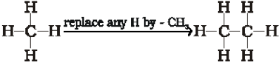
These hydrocarbons are inert under normal conditions as they do not react with acids, bases and other reagents. Hence, they were earlier known as paraffins (latin : parum, little; affinis, affinity). Can you think of the general formula for alkane family or homologous series? The general formula for alkanes is CnH2n+2, where n stands for number of carbon atoms and 2n+2 for number of hydrogen atoms in the molecule. Can you recall the structure of methane? According to VSEPR theory (Unit 4), methane has a tetrahedral structure (Fig. 13.1) which is multiplanar, in which carbon atom lies at the centre and the four hydrogen atoms lie at the four corners of a regular tetrahedron. All H-C-H bond angles are of 109.5°.

In alkanes, tetrahedra are joined together in which C-C and C-H bond lengths are 154 pm and 112 pm respectively (Unit 12). You have already read that C–C and C–H σ bonds are formed by head-on overlapping of sp3 hybrid orbitals of carbon and 1s orbitals of hydrogen atoms.
13.2.1 Nomenclature and Isomerism
You have already read about nomenclature of different classes of organic compounds in Unit 12. Nomenclature and isomerism in alkanes can further be understood with the help of a few more examples. Common names are given in parenthesis. First three alkanes – methane, ethane and propane have only one structure but higher alkanes can have more than one structure. Let us write structures for C4H10. Four carbon atoms of C4H10 can be joined either in a continuous chain or with a branched chain in the following two ways :
I
II
In how many ways, you can join five carbon atoms and twelve hydrogen atoms of C5H12? They can be arranged in three ways as shown in structures III–V
III
Pentane (n-pentane)
(b.p. 309 K)
IV
V
Structures I and II possess same molecular formula but differ in their boiling points and other properties. Similarly structures III, IV and V possess the same molecular formula but have different properties. Structures I and II are isomers of butane, whereas structures III, IV and V are isomers of pentane. Since difference in properties is due to difference in their structures, they are known as structural isomers. It is also clear that structures I and III have continuous chain of carbon atoms but structures II, IV and V have a branched chain. Such structural isomers which differ in chain of carbon atoms are known as chain isomers. Thus, you have seen that C4H10 and C5H12 have two and three chain isomers respectively.
Problem 13.1
Write structures of different chain isomers of alkanes corresponding to the molecular formula C6H14. Also write their IUPAC names.
Solution
(i) CH3 – CH2 – CH2 – CH2– CH2– CH3
n-Hexane
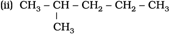
2-Methylpentane

3-Methylpentane

2,3-Dimethylbutane
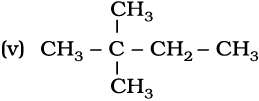
2,2 - Dimethylbutane
Based upon the number of carbon atoms attached to a carbon atom, the carbon atom is termed as primary (1°), secondary (2°), tertiary (3°) or quaternary (4°). Carbon atom attached to no other carbon atom as in methane or to only one carbon atom as in ethane is called primary carbon atom. Terminal carbon atoms are always primary. Carbon atom attached to two carbon atoms is known as secondary. Tertiary carbon is attached to three carbon atoms and neo or quaternary carbon is attached to four carbon atoms. Can you identify 1°, 2°, 3° and 4° carbon atoms in structures I to V ? If you go on constructing structures for higher alkanes, you will be getting still larger number of isomers. C6H14 has got five isomers and C7H16 has nine. As many as 75 isomers are possible for C10H22.
In structures II, IV and V, you observed that –CH3 group is attached to carbon atom numbered as 2. You will come across groups like –CH3, –C2H5, –C3H7 etc. attached to carbon atoms in alkanes or other classes of compounds. These groups or substituents are known as alkyl groups as they are derived from alkanes by removal of one hydrogen atom. General formula for alkyl groups is CnH2n+1 (Unit 12).
Let us recall the general rules for nomenclature already discussed in Unit 12. Nomenclature of substituted alkanes can further be understood by considering the following problem:
Problem 13.2
Write structures of different isomeric alkyl groups corresponding to the molecular formula C5H11. Write IUPAC names of alcohols obtained by attachment of –OH groups at different carbons of the chain.
Solution
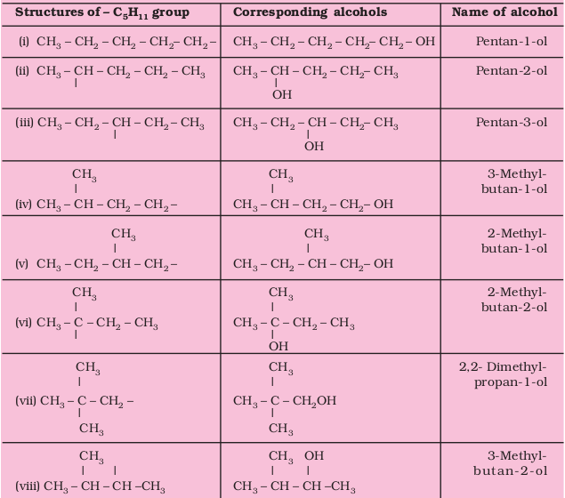
Table 13.1 Nomenclature of a Few Organic Compounds
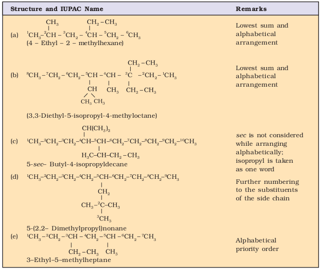
Problem 13.3
Write IUPAC names of the following compounds :
(i) (CH3)3 C CH2C(CH3)3
(ii) (CH3)2 C(C2H5)2
(iii) tetra – tert-butylmethane
Solution
(i) 2, 2, 4, 4-Tetramethylpentane
(ii) 3, 3-Dimethylpentane
(iii) 3,3-Di-tert-butyl -2, 2, 4, 4 - tetramethylpentane
If it is important to write the correct IUPAC name for a given structure, it is equally important to write the correct structure from the given IUPAC name. To do this, first of all, the longest chain of carbon atoms corresponding to the parent alkane is written. Then after numbering it, the substituents are attached to the correct carbon atoms and finally valence of each carbon atom is satisfied by putting the correct number of hydrogen atoms. This can be clarified by writing the structure of 3-ethyl-2, 2–dimethylpentane in the following steps :
i) Draw the chain of five carbon atoms:
C – C – C – C – C
ii) Give number to carbon atoms:
C1– C2– C3– C4– C5
iii) Attach ethyl group at carbon 3 and two methyl groups at carbon 2
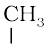
C1 – 2C – 3C – 4C – 5C


iv) Satisfy the valence of each carbon atom by putting requisite number of hydrogen atoms :
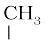
CH3 – C – CH – CH2 – CH3
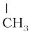 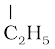
Thus we arrive at the correct structure. If you have understood writing of structure from the given name, attempt the following problems.
Problem 13.4
Write structural formulas of the following compounds :
(i) 3, 4, 4, 5–Tetramethylheptane
(ii) 2,5-Dimethyhexane
Solution

(i) CH3 – CH2 – CH – C – CH– CH – CH3


(ii) CH3 – CH – CH2 – CH2 – CH – CH3
Problem 13.5
Write structures for each of the following compounds. Why are the given names incorrect? Write correct IUPAC
names.
(i) 2-Ethylpentane
(ii) 5-Ethyl – 3-methylheptane
Solution
(i) CH3 – CH – CH2– CH2 – CH3
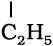
Longest chain is of six carbon atoms and not that of five. Hence, correct name is 3-Methylhexane.
7 6 5 4 3 2 1
(ii) CH3 – CH2 – CH – CH2 – CH – CH2 – CH3

Numbering is to be started from the end which gives lower number to ethyl group. Hence, correct name is 3-ethyl-5-methylheptane.
13.2.2 Preparation
Petroleum and natural gas are the main sources of alkanes. However, alkanes can be prepared by following methods :
1. From unsaturated hydrocarbons
Dihydrogen gas adds to alkenes and alkynes in the presence of finely divided catalysts like platinum, palladium or nickel to form alkanes. This process is called hydrogenation. These metals adsorb dihydrogen gas on their surfaces and activate the hydrogen – hydrogen bond. Platinum and palladium catalyse the reaction at room temperature but relatively higher temperature and pressure are required with nickel catalysts.
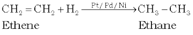 (13.1)
 (13.2)
(13.2)
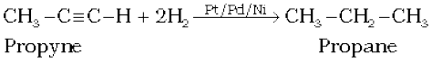
(13.3)
2. From alkyl halides
i) Alkyl halides (except fluorides) on reduction with zinc and dilute hydrochloric acid give alkanes.
(13.4)
Chloromethane Methane
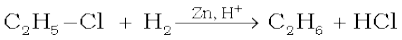
Chloroethane Ethane (13.5)
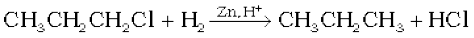
1-Chloropropane Propane
(13.6)
ii) Alkyl halides on treatment with sodium metal in dry ethereal (free from moisture) solution give higher alkanes. This reaction is known as Wurtz reaction and is used for the preparation of higher alkanes containing even number of carbon
atoms.
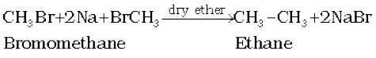
(13.7)
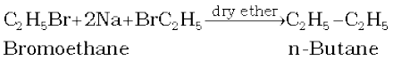
(13.8)
What will happen if two different alkyl halides are taken?
3. From carboxylic acids
i) Sodium salts of carboxylic acids on heating with soda lime (mixture of sodium hydroxide and calcium oxide) give alkanes containing one carbon atom less than the carboxylic acid. This process of elimination of carbon dioxide from a carboxylic acid is known as decarboxylation.
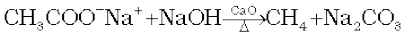
Sodium ethanoate
Problem 13.6
Sodium salt of which acid will be needed for the preparation of propane ? Write chemical equation for the reaction.
Solution
Butanoic acid,
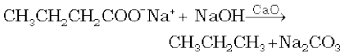
ii) Kolbe’s electrolytic method An aqueous solution of sodium or potassium salt of a carboxylic acid on electrolysis gives alkane containing even number of carbon atoms at the anode. 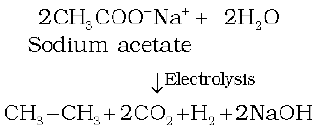 (13.9)
The reaction is supposed to follow the following path :
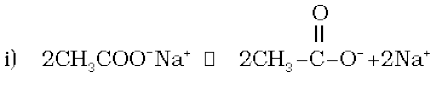
ii) At anode:

Acetate ion Acetate Methyl free
free radical radical
iii) 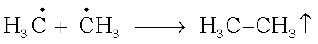
iv) At cathode :
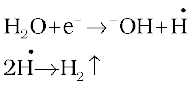
Methane cannot be prepared by this method. Why?
13.2.3 Properties
Physical properties
Alkanes are almost non-polar molecules because of the covalent nature of C-C and C-H bonds and due to very little difference of electronegativity between carbon and hydrogen atoms. They possess weak van der Waals forces. Due to the weak forces, the first four members, C1 to C4 are gases, C5 to C17 are liquids and those containing 18 carbon atoms or more are solids at 298 K. They are colourless and odourless. What do you think about solubility of alkanes in water based upon non-polar nature of alkanes? Petrol is a mixture of hydrocarbons and is used as a fuel for automobiles. Petrol and lower fractions of petroleum are also used for dry cleaning of clothes to remove grease stains. On the basis of this observation, what do you think about the nature of the greasy substance? You are correct if you say that grease (mixture of higher alkanes) is non-polar and, hence, hydrophobic in nature. It is generally observed that in relation to solubility of substances in solvents, polar substances are soluble in polar solvents, whereas the non-polar ones in non-polar solvents i.e., like dissolves like.
Boiling point (b.p.) of different alkanes are given in Table 13.2 from which it is clear that there is a steady increase in boiling point with increase in molecular mass. This is due to the fact that the intermolecular van der Waals forces increase with increase of the molecular size or the surface area of the molecule.
You can make an interesting observation by having a look on the boiling points of three isomeric pentanes viz., (pentane, 2-methylbutane and 2,2-dimethylpropane). It is observed (Table 13.2) that pentane having a continuous chain of five carbon atoms has the highest boiling point (309.1K) whereas 2,2 – dimethylpropane boils at 282.5K. With increase in number of branched chains, the molecule attains the shape of a sphere. This results in smaller area of contact and therefore weak intermolecular forces between spherical molecules, which are overcome at relatively lower temperatures.
Chemical properties
As already mentioned, alkanes are generally inert towards acids, bases, oxidising and reducing agents. However, they undergo the following reactions under certain conditions.
1. Substitution reactions
One or more hydrogen atoms of alkanes can be replaced by halogens, nitro group and sulphonic acid group. Halogenation takes place either at higher temperature (573-773 K) or in the presence of diffused sunlight or ultraviolet light. Lower alkanes do not undergo nitration and sulphonation reactions. These reactions in which hydrogen atoms of alkanes are substituted are known as substitution reactions. As an example, chlorination of methane is given below:
Halogenation
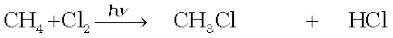
Chloromethane (13.10)
Dichloromethane (13.11)
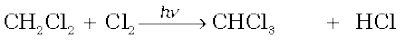
Trichloromethane (13.12)
Tetrachloromethane (13.13)
Table 13.2 Variation of Melting Point and Boiling Point in Alkanes
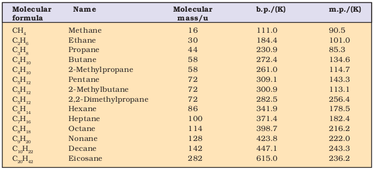
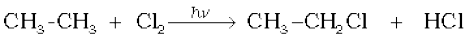
Chloroethane (13.14)
It is found that the rate of reaction of alkanes with halogens is F2 > Cl2 > Br2 > I2. Rate of replacement of hydrogens of alkanes is :
3° > 2° > 1°. Fluorination is too violent to be controlled. Iodination is very slow and a reversible reaction. It can be carried out in the presence of oxidizing agents like HIO3 or HNO3.
CH4 + I2 → CH3 + HI (13.15)
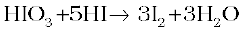 (13.16)
Halogenation is supposed to proceed via free radical chain mechanism involving three steps namely initiation, propagation and termination as given below:
Mechanism
(i) Initiation : The reaction is initiated by homolysis of chlorine molecule in the presence of light or heat. The Cl–Cl bond is weaker than the C–C and C–H bond and hence, is easiest to break.
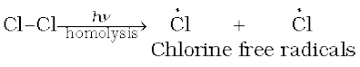
(ii) Propagation : Chlorine free radical attacks the methane molecule and takes the reaction in the forward direction by breaking the C-H bond to generate methyl free radical with the formation of H-Cl.
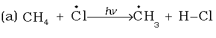
The methyl radical thus obtained attacks the second molecule of chlorine to form CH3 – Cl with the liberation of another chlorine free radical by homolysis of chlorine molecule.
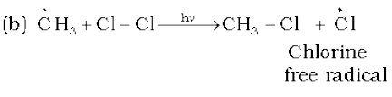
The chlorine and methyl free radicals generated above repeat steps (a) and (b) respectively and thereby setup a chain of reactions. The propagation steps (a) and (b) are those which directly give principal products, but many other propagation steps are possible and may occur. Two such steps given below explain how more highly haloginated products are formed.

(iii) Termination: The reaction stops after some time due to consumption of reactants and / or due to the following side reactions :
The possible chain terminating steps are :
(a) 
(b) 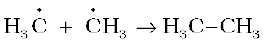
(c) 
Though in (c), CH3 – Cl, the one of the products is formed but free radicals are consumed and the chain is terminated. The above mechanism helps us to understand the reason for the formation of ethane as a byproduct during chlorination of methane.
2. Combustion
Alkanes on heating in the presence of air or dioxygen are completely oxidized to carbon dioxide and water with the evolution of large amount of heat.

(13.17)

(13.18)
The general combustion equation for any alkane is :
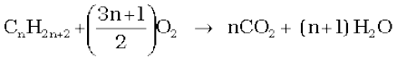
(13.19)
Due to the evolution of large amount of heat during combustion, alkanes are used as fuels.
During incomplete combustion of alkanes with insufficient amount of air or dioxygen, carbon black is formed which is used in the manufacture of ink, printer ink, black pigments and as filters.
 (13.20)
(13.20)
3. Controlled oxidation
Alkanes on heating with a regulated supply of dioxygen or air at high pressure and in the presence of suitable catalysts give a variety of oxidation products.
 (13.21)
(13.21)
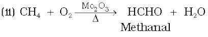 (13.22)
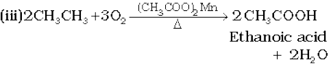
(13.23)
(iv) Ordinarily alkanes resist oxidation but alkanes having tertiary H atom can be oxidized to corresponding alcohols by potassium permanganate.
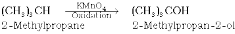
(13.24)
4. Isomerisation
n-Alkanes on heating in the presence of anhydrous aluminium chloride and hydrogen chloride gas isomerise to branched chain alkanes. Major products are given below. Some minor products are also possible which you can think over. Minor products are generally not reported in organic reactions.
 (13.25)
(13.25)
5. Aromatization
n-Alkanes having six or more carbon atoms on heating to 773K at 10-20 atmospheric pressure in the presence of oxides of vanadium, molybdenum or chromium supported over alumina get dehydrogenated and cyclised to benzene and its homologues. This reaction is known as aromatization or reforming.
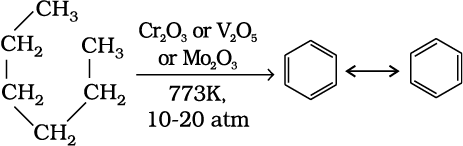
(13.26)
Toluene (C7H8) is methyl derivative of benzene. Which alkane do you suggest for preparation of toluene ?
6. Reaction with steam
Methane reacts with steam at 1273 K in the presence of nickel catalyst to form carbon monoxide and dihydrogen. This method is used for industrial preparation of dihydrogen gas
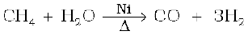 (13.27)
7. Pyrolysis
Higher alkanes on heating to higher temperature decompose into lower alkanes, alkenes etc. Such a decomposition reaction into smaller fragments by the application of heat is called pyrolysis or cracking.
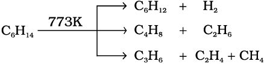
(13.28)
Pyrolysis of alkanes is believed to be a free radical reaction. Preparation of oil gas or petrol gas from kerosene oil or petrol involves the principle of pyrolysis. For example, dodecane, a constituent of kerosene oil on heating to 973K in the presence of platinum, palladium or nickel gives a mixture of heptane and pentene.
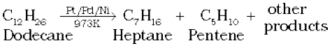
(13.29)
13.2.4 Conformations
Alkanes contain carbon-carbon sigma (σ) bonds. Electron distribution of the sigma molecular orbital is symmetrical around the internuclear axis of the C–C bond which is not disturbed due to rotation about its axis. This permits free rotation about C–C single bond. This rotation results into different spatial arrangements of atoms in space which can change into one another. Such spatial arrangements of atoms which can be converted into one another by rotation around a C-C single bond are called conformations or conformers or rotamers. Alkanes can thus have infinite number of conformations by rotation around C-C single bonds. However, it may be remembered that rotation around a C-C single bond is not completely free. It is hindered by a small energy barrier of 1-20 kJ mol–1 due to weak repulsive interaction between the adjacent bonds. Such a type of repulsive interaction is called torsional strain.
Conformations of ethane : Ethane molecule (C2H6) contains a carbon – carbon single bond with each carbon atom attached to three hydrogen atoms. Considering the ball and stick model of ethane, keep one carbon atom stationary and rotate the other carbon atom around the C-C axis. This rotation results into infinite number of spatial arrangements of hydrogen atoms attached to one carbon atom with respect to the hydrogen atoms attached to the other carbon atom. These are called conformational isomers (conformers). Thus there are infinite number of conformations of ethane. However, there are two extreme cases. One such conformation in which hydrogen atoms attached to two carbons are as closed together as possible is called eclipsed conformation and the other in which hydrogens are as far apart as possible is known as the staggered conformation. Any other intermediate conformation is called a skew conformation.It may be remembered that in all the conformations, the bond angles and the bond lengths remain the same. Eclipsed and the staggered conformations can be represented by Sawhorse and Newman projections.
1. Sawhorse projections
In this projection, the molecule is viewed along the molecular axis. It is then projected on paper by drawing the central C–C bond as a somewhat longer straight line. Upper end of the line is slightly tilted towards right or left hand side. The front carbon is shown at the lower end of the line, whereas the rear carbon is shown at the upper end. Each carbon has three lines attached to it corresponding to three hydrogen atoms. The lines are inclined at an angle of 120° to each other. Sawhorse projections of eclipsed and staggered conformations of ethane are depicted in Fig. 13.2.
2. Newman projections
In this projection, the molecule is viewed at the C–C bond head on. The carbon atom nearer to the eye is represented by a point. Three hydrogen atoms attached to the front carbon atom are shown by three lines drawn at an angle of 120° to each other. The rear carbon atom (the carbon atom away from the eye) is represented by a circle and the three hydrogen atoms are shown attached to it by the shorter lines drawn at an angle of 120° to each other. The Newman’s projections are depicted in Fig. 13.3.
Relative stability of conformations: As mentioned earlier, in staggered form of ethane, the electron clouds of carbon-hydrogen bonds are as far apart as possible. Thus, there are minimum repulsive forces, minimum energy and maximum stability of the molecule. On the other hand, when the staggered form changes into the eclipsed form, the electron clouds of the carbon – hydrogen bonds come closer to each other resulting in increase in electron cloud repulsions. To check the increased repulsive forces, molecule will have to possess more energy and thus has lesser stability. As already mentioned, the repulsive interaction between the electron clouds, which affects stability of a conformation, is called torsional strain. Magnitude of torsional strain depends upon the angle of rotation about C–C bond. This angle is also called dihedral angle or torsional angle. Of all the conformations of ethane, the staggered form has the least torsional strain and the eclipsed form, the maximum torsional strain. Thus it may be inferred that rotation around C–C bond in ethane is not completely free. The energy difference between the two extreme forms is of the order of 12.5 kJ mol–1, which is very small. Even at ordinary temperatures, the ethane molecule gains thermal or kinetic energy sufficient enough to overcome this energy barrier of 12.5 kJ mol–1 through intermolecular collisions. Thus, it can be said that rotation about carbon-carbon single bond in ethane is almost free for all practical purposes. It has not been possible to separate and isolate different conformational isomers of ethane.
13.3 ALKENES
Alkenes are unsaturated hydrocarbons containing at least one double bond. What should be the general formula of alkenes? If there is one double bond between two carbon atoms in alkenes, they must possess two hydrogen atoms less than alkanes. Hence, general formula for alkenes is CnH2n. Alkenes are also known as olefins (oil forming) since the first member, ethylene or ethene (C2H4) was found to form an oily liquid on reaction with chlorine.
13.3.1 Structure of Double Bond
Carbon-carbon double bond in alkenes consists of one strong sigma (σ) bond (bond enthalpy about 397 kJ mol–1) due to head-on overlapping of sp2 hybridised orbitals and one weak pi (π) bond (bond enthalpy about 284 kJ mol–1) obtained by lateral or sideways overlapping of the two 2p orbitals of the two carbon atoms. The double bond is shorter in bond length (134 pm) than the C–C single bond (154 pm). You have already read that the pi (π) bond is a weaker bond due to poor sideways overlapping between the two 2p orbitals. Thus, the presence of the pi (π) bond makes alkenes behave as sources of loosely held mobile electrons. Therefore, alkenes are easily attacked by reagents or compounds which are in search of electrons. Such reagents are called electrophilic reagents. The presence of weaker π-bond makes alkenes unstable molecules in comparison to alkanes and thus, alkenes can be changed into single bond compounds by combining with the electrophilic reagents. Strength of the double bond (bond enthalpy, 681 kJ mol–1) is greater than that of a carbon-carbon single bond in ethane (bond enthalpy, 348 kJ mol–1). Orbital diagrams of ethene molecule are shown in Figs. 13.4 and 13.5.
13.3.2 Nomenclature
For nomenclature of alkenes in IUPAC system, the longest chain of carbon atoms containing the double bond is selected. Numbering of the chain is done from the end which is nearer to the double bond.
Fig. 13.5 Orbital picture of ethene showing formation of (a) π-bond, (b) π-cloud and (c) bond angles and bond lengths
The suffix ‘ene’ replaces ‘ane’ of alkanes. It may be remembered that first member of alkene series is: CH2 (replacing n by 1 in CnH2n) known as methene but has a very short life. As already mentioned, first stable member of alkene series is C2H4 known as ethylene (common) or ethene (IUPAC). IUPAC names of a few members of alkenes are given below :
Structure IUPAC name
CH3 – CH = CH2 Propene
CH3 – CH2 – CH = CH2 But – l - ene
CH3 – CH = CH–CH3 But-2-ene
CH2 = CH – CH = CH2 Buta – 1,3 - diene
CH2 = C – CH3 2- Methylprop-1-ene
|
CH3
CH2 = CH – CH – CH3 3-Methylbut-1-ene
|
CH3
Problem 13.7
Write IUPAC names of the following compounds:
(i) (CH3)2CH – CH = CH – CH2 – CH
||
CH3 – CH – CH
|
C2H5
(ii)
(iii) CH2 = C (CH2CH2CH3)2
(iv) CH3 CH2 CH2 CH2 CH2CH3
| |
CH3 – CHCH = C – CH2 – CHCH3
|
CH3
Solution
(i) 2,8-Dimethyl-3, 6-decadiene;
(ii) 1,3,5,7 Octatetraene;
(iii) 2-n-Propylpent-1-ene;
(iv) 4-Ethyl-2,6-dimethyl-dec-4-ene;
Problem 13.8
Calculate number of sigma (σ) and pi (π) bonds in the above structures (i-iv).
Solution
σ bonds : 33, π bonds : 2
σ bonds : 17, π bonds : 4
σ bonds : 23, π bond : 1
σ bonds : 41, π bond : 1
13.3.3 Isomerism
Alkenes show both structural isomerism and geometrical isomerism.
Structural isomerism : As in alkanes, ethene (C2H4) and propene (C3H6) can have only one structure but alkenes higher than propene have different structures. Alkenes possessing C4H8 as molecular formula can be written in the following three ways:
I. 1 2 3 4
CH2 = CH – CH2 – CH3
But-1-ene
(C4H8)
II. 1 2 3 4
CH3 – CH = CH – CH3
But-2-ene
(C4H8)
III. 1 2 3
CH2 = C – CH3
|
CH3
2-Methyprop-1-ene
(C4H8)
Structures I and III, and II and III are the examples of chain isomerism whereas structures I and II are position isomers.
Problem 13.9
Write structures and IUPAC names of different structural isomers of alkenes corresponding to C5H10.
Solution
(a) CH2 = CH – CH2 – CH2 – CH3
Pent-1-ene
(b) CH3 – CH=CH – CH2 – CH3
Pent-2-ene
(c) CH3 – C = CH – CH3
|
CH3
2-Methylbut-2-ene
(d) CH3 – CH – CH = CH2
|
CH3
3-Methylbut-1-ene
(e) CH2 = C – CH2 – CH3
|
CH3
2-Methylbut-1-ene
Geometrical isomerism: Doubly bonded carbon atoms have to satisfy the remaining two valences by joining with two atoms or groups. If the two atoms or groups attached to each carbon atom are different, they can be represented by YX C = C XY like structure. YX C = C XY can be represented in space in the following two ways :
In (a), the two identical atoms i.e., both the X or both the Y lie on the same side of the double bond but in (b) the two X or two Y lie across the double bond or on the opposite sides of the double bond. This results in different geometry of (a) and (b) i.e. disposition of atoms or groups in space in the two arrangements is different. Therefore, they are stereoisomers. They would have the same geometry if atoms or groups around C=C bond can be rotated but rotation around C=C bond is not free. It is restricted. For understanding this concept, take two pieces of strong cardboards and join them with the help of two nails. Hold one cardboard in your one hand and try to rotate the other. Can you really rotate the other cardboard ? The answer is no. The rotation is restricted. This illustrates that the restricted rotation of atoms or groups around the doubly bonded carbon atoms gives rise to different geometries of such compounds. The stereoisomers of this type are called geometrical isomers. The isomer of the type (a), in which two identical atoms or groups lie on the same side of the double bond is called cis isomer and the other isomer of the type (b), in which identical atoms or groups lie on the opposite sides of the double bond is called trans isomer. Thus cis and trans isomers have the same structure but have different configuration (arrangement of atoms or groups in space). Due to different arrangement of atoms or groups in space, these isomers differ in their properties like melting point, boiling point, dipole moment, solubility etc. Geometrical or cis-trans isomers of but-2-ene are represented below :
Cis form of alkene is found to be more polar than the trans form. For example, dipole moment of cis-but-2-ene is 0.33 Debye, whereas, dipole moment of the trans form is almost zero or it can be said that trans-but-2-ene is non-polar. This can be understood by drawing geometries of the two forms as given below from which it is clear that in the trans-but-2-ene, the two methyl groups are in opposite directions, Threfore, dipole moments of C-CH3 bonds cancel, thus making the transform non-polar.
cis-But-2-ene trans-But-2-ene
(µ = 0.33D) (µ = 0)
In the case of solids, it is observed that the trans isomer has higher melting point than the cis form.
Geometrical or cis-trans isomerism is also shown by alkenes of the types XYC = CXZ and XYC = CZW
Problem 13.10
Draw cis and trans isomers of the following compounds. Also write their IUPAC names :
(i) CHCl = CHCl
(ii) C2H5CCH3 = CCH3C2H5
Solution
Problem 13.11
Which of the following compounds will show cis-trans isomerism?
(i) (CH3)2C = CH – C2H5
(ii) CH2 = CBr2
(iii) C6H5CH = CH – CH3
(iv) CH3CH = CCl CH3
Solution
(iii) and (iv). In structures (i) and (ii), two identical groups are attached to one of the doubly bonded carbon atom.
13.3.4 Preparation
1. From alkynes: Alkynes on partial reduction with calculated amount of dihydrogen in the presence of palladised charcoal partially deactivated with poisons like sulphur compounds or quinoline give alkenes. Partially deactivated palladised charcoal is known as Lindlar’s catalyst. Alkenes thus obtained are having cis geometry. However, alkynes on reduction with sodium in liquid ammonia form trans alkenes.
(13.30)
(13.31)
iii)  (13.32)
(13.32)
Ethyne Ethene
iv)
Propyne Propene (13.33)
Will propene thus obtained show geometrical isomerism? Think for the reason in support of your answer.
2. From alkyl halides: Alkyl halides (R-X) on heating with alcoholic potash (potassium hydroxide dissolved in alcohol, say, ethanol) eliminate one molecule of halogen acid to form alkenes. This reaction is known as dehydrohalogenation i.e., removal of halogen acid. This is example of β-elimination reaction, since hydrogen atom is eliminated from the β carbon atom (carbon atom next to the carbon to which halogen is attached).
(13.34)
Nature of halogen atom and the alkyl group determine rate of the reaction. It is observed that for halogens, the rate is: iodine > bromine > chlorine, while for alkyl groups it is : tert > secondary > primary.
3. From vicinal dihalides: Dihalides in which two halogen atoms are attached to two adjacent carbon atoms are known as vicinal dihalides. Vicinal dihalides on treatment with zinc metal lose a molecule of ZnX2 to form an alkene. This reaction is known as dehalogenation.
13.35)
(13.36)
4. From alcohols by acidic dehydration : You have read during nomenclature of different homologous series in Unit 12 that alcohols are the hydroxy derivatives of alkanes. They are represented by R–OH where, R is CnH2n+1. Alcohols on heating with concentrated sulphuric acid form alkenes with the elimination of one water molecule. Since a water molecule is eliminated from the alcohol molecule in the presence of an acid, this reaction is known as acidic dehydration of alcohols. This reaction is also the example of β-elimination reaction since –OH group takes out one hydrogen atom from the β-carbon atom.
(13.37)
13.3.5 Properties
Physical properties
Alkenes as a class resemble alkanes in physical properties, except in types of isomerism and difference in polar nature. The first three members are gases, the next fourteen are liquids and the higher ones are solids. Ethene is a colourless gas with a faint sweet smell. All other alkenes are colourless and odourless, insoluble in water but fairly soluble in non-polar solvents like benzene, petroleum ether. They show a regular increase in boiling point with increase in size i.e., every – CH2 group added increases boiling point by 20–30 K. Like alkanes, straight chain alkenes have higher boiling point than isomeric branched chain compounds.
Chemical properties
Alkenes are the rich source of loosely held pi (π) electrons, due to which they show addition reactions in which the electrophiles add on to the carbon-carbon double bond to form the addition products. Some reagents also add by free radical mechanism. There are cases when under special conditions, alkenes also undergo free radical substitution reactions. Oxidation and ozonolysis reactions are also quite prominent in alkenes. A brief description of different reactions of alkenes is given below:
1. Addition of dihydrogen: Alkenes add up one molecule of dihydrogen gas in the presence of finely divided nickel, palladium or platinum to form alkanes (Section 13.2.2)
2. Addition of halogens : Halogens like bromine or chlorine add up to alkene to form vicinal dihalides. However, iodine does not show addition reaction under normal conditions. The reddish orange colour of bromine solution in carbon tetrachloride is discharged when bromine adds up to an unsaturation site. This reaction is used as a test for unsaturation. Addition of halogens to alkenes is an example of electrophilic addition reaction involving cyclic halonium ion formation which you will study in higher classes.
(13.38)
(13.39)
3. Addition of hydrogen halides: Hydrogen halides (HCl, HBr,HI) add up to alkenes to form alkyl halides. The order of reactivity of the hydrogen halides is HI > HBr > HCl. Like addition of halogens to alkenes, addition of hydrogen halides is also an example of electrophilic addition reaction. Let us illustrate this by taking addition of HBr to symmetrical and unsymmetrical alkenes
Addition reaction of HBr to symmetrical alkenes
Addition reactions of HBr to symmetrical alkenes (similar groups attached to double bond) take place by electrophilic addition mechanism.
(13.40)
(13.41)
Addition reaction of HBr to unsymmetrical alkenes (Markovnikov Rule)
How will H – Br add to propene ? The two possible products are I and II.

(13.42)
Markovnikov, a Russian chemist made a generalisation in 1869 after studying such reactions in detail. These generalisations led Markovnikov to frame a rule called Markovnikov rule. The rule states that negative part of the addendum (adding molecule) gets attached to that carbon atom which possesses lesser number of hydrogen atoms. Thus according to this rule, product I i.e., 2-bromopropane is expected. In actual practice, this is the principal product of the reaction. This generalisation of Markovnikov rule can be better understood in terms of mechanism of the reaction.
Mechanism
Hydrogen bromide provides an electrophile, H+, which attacks the double bond to form carbocation as shown below :
(a) less stable (b) more stable
primary carbocation secondary carbocation
(i) The secondary carbocation (b) is more stable than the primary carbocation (a), therefore, the former predominates because it is formed at a faster rate.
(ii) The carbocation (b) is attacked by Br– ion to form the product as follows :
2-Bromopropane
(major product)
Anti Markovnikov addition or peroxide effect or Kharash effect
In the presence of peroxide, addition of HBr to unsymmetrical alkenes like propene takes place contrary to the Markovnikov rule. This happens only with HBr but not with HCl and Hl. This addition reaction was observed by M.S. Kharash and F.R. Mayo in 1933 at the University of Chicago. This reaction is known as peroxide or Kharash effect or addition reaction anti to Markovnikov rule.
(13.43)
Mechanism : Peroxide effect proceeds via free radical chain mechanism as given below:
(i)
(ii)
The secondary free radical obtained in the above mechanism (step iii) is more stable than the primary. This explains the formation of 1-bromopropane as the major product. It may be noted that the peroxide effect is not observed in addition of HCl and HI. This may be due to the fact that the H–Cl bond being stronger (430.5 kJ mol–1) than H–Br bond (363.7 kJ mol–1), is not cleaved by the free radical, whereas the H–I bond is weaker (296.8 kJ mol–1) and iodine free radicals combine to form iodine molecules instead of adding to the double bond.
Problem 13.12
Write IUPAC names of the products obtained by addition reactions of HBr to hex-1-ene
(i) in the absence of peroxide and
(ii) in the presence of peroxide.
Solution
4. Addition of sulphuric acid : Cold concentrated sulphuric acid adds to alkenes in accordance with Markovnikov rule to form alkyl hydrogen sulphate by the electrophilic addition reaction.
(13.44)
(13.45)
5. Addition of water : In the presence of a few drops of concentrated sulphuric acid alkenes react with water to form alcohols, in accordance with the Markovnikov rule.
(13.46)
6. Oxidation: Alkenes on reaction with cold, dilute, aqueous solution of potassium permanganate (Baeyer’s reagent) produce vicinal glycols. Decolorisation of KMnO4 solution is used as a test for unsaturation.
(13.47)
(13.48)
b) Acidic potassium permanganate or acidic potassium dichromate oxidises alkenes to ketones and/or acids depending upon the nature of the alkene and the experimental conditions
(13.49)

(13.50)
7. Ozonolysis : Ozonolysis of alkenes involves the addition of ozone molecule to alkene to form ozonide, and then cleavage of the ozonide by Zn-H2O to smaller molecules. This reaction is highly useful in detecting the position of the double bond in alkenes or other unsaturated compounds.
(13.51)
(13.52)
8. Polymerisation: You are familiar with polythene bags and polythene sheets. Polythene is obtained by the combination of large number of ethene molecules at high temperature, high pressure and in the presence of a catalyst. The large molecules thus obtained are called polymers. This reaction is known as polymerisation. The simple compounds from which polymers are made are called monomers. Other alkenes also undergo polymerisation.
(13.53)

(13.54)
Polymers are used for the manufacture of plastic bags, squeeze bottles, refrigerator dishes, toys, pipes, radio and T.V. cabinets etc. Polypropene is used for the manufacture of milk crates, plastic buckets and other moulded articles. Though these materials have now become common, excessive use of polythene and polypropylene is a matter of great concern for all of us.
13.4 ALKYNES
Like alkenes, alkynes are also unsaturated hydrocarbons. They contain at least one triple bond between two carbon atoms. The number of hydrogen atoms is still less in alkynes as compared to alkenes or alkanes. Their general formula is CnH2n–2.
The first stable member of alkyne series is ethyne which is popularly known as acetylene. Acetylene is used for arc welding purposes in the form of oxyacetylene flame obtained by mixing acetylene with oxygen gas. Alkynes are starting materials for a large number of organic compounds. Hence, it is interesting to study this class of organic compounds.
13.4.1 Nomenclature and Isomerism
In common system, alkynes are named as derivatives of acetylene. In IUPAC system, they are named as derivatives of the corresponding alkanes replacing ‘ane’ by the suffix ‘yne’. The position of the triple bond is indicated by the first triply bonded carbon. Common and IUPAC names of a few members of alkyne series are given in Table 13.2.
Table 13.2 Common and IUPAC Names of Alkynes (CnH2n–2)
You have already learnt that ethyne and propyne have got only one structure but there are two possible structures for butyne – (i) but-1-yne and (ii) but-2-yne. Since these two compounds differ in their structures due to the position of the triple bond, they are known as position isomers. In how many ways, you can construct the structure for the next homologue i.e., the next alkyne with molecular formula C5H8? Let us try to arrange five carbon atoms with a continuous chain and with a side chain. Following are the possible structures :
Structure IUPAC name
I. Pent–1-yne
II. Pent–2-yne
III. 3-Methyl but–1-yne
|
CH3
Structures I and II are position isomers and structures I and III or II and III are chain isomers.
Problem 13.13
Write structures of different isomers corresponding to the 5th member of alkyne series. Also write IUPAC names of all the isomers. What type of isomerism is exhibited by different pairs of isomers?
Solution
5th member of alkyne has the molecular formula C6H10. The possible isomers are:
(a) HC ≡ C – CH2 – CH2 – CH2 – CH3
Hex-1-yne
(b) CH3 – C ≡ C – CH2 – CH2 – CH3
Hex-2-yne
(c) CH3 – CH2 – C ≡ C – CH2– CH3
Hex-3-yne
3-Methylpent-1-yne

4-Methylpent-1-yne
4-Methylpent-2-yne

3,3-Dimethylbut-1-yne
Position and chain isomerism shown by different pairs.
13.4.2 Structure of Triple Bond
Ethyne is the simplest molecule of alkyne series. Structure of ethyne is shown in Fig. 13.6.
Each carbon atom of ethyne has two sp hybridised orbitals. Carbon-carbon sigma (σ) bond is obtained by the head-on overlapping of the two sp hybridised orbitals of the two carbon atoms. The remaining sp hybridised orbital of each carbon atom undergoes overlapping along the internuclear axis with the 1s orbital of each of the two hydrogen atoms forming two C-H sigma bonds. H-C-C bond angle is of 180°. Each carbon has two unhybridised p orbitals which are perpendicular to each other as well as to the plane of the C-C sigma bond. The 2p orbitals of one carbon atom are parallel to the 2p orbitals of the other carbon atom, which undergo lateral or sideways overlapping to form two pi (π) bonds between two carbon atoms. Thus ethyne molecule consists of one C–C σ bond, two C–H σ bonds and two C–C π bonds. The strength of C≡C bond (bond enthalpy 823 kJ mol-1) is more than those of C=C bond (bond enthalpy 681 kJ mol–1) and C–C bond (bond enthalpy 348 kJ mol–1). The C≡C bond length is shorter (120 pm) than those of C=C (133 pm) and C–C (154 pm). Electron cloud between two carbon atoms is cylindrically symmetrical about the internuclear axis. Thus, ethyne is a linear molecule.

Fig. 13.6 Orbital picture of ethyne showing
(a) sigma overlaps (b) pi overlaps.
13.4.3 Preparation
1. From calcium carbide: On industrial scale, ethyne is prepared by treating calcium carbide with water. Calcium carbide is prepared by heating quick lime with coke. Quick lime can be obtained by heating limestone as shown in the following reactions:
 (13.55)
(13.55)
 (13.56)
(13.56)
Calcium
carbide
(13.57)
2. From vicinal dihalides : Vicinal dihalides on treatment with alcoholic potassium hydroxide undergo dehydrohalogenation. One molecule of hydrogen halide is eliminated to form alkenyl halide which on treatment with sodamide gives alkyne.

13.4.4 Properties
Physical properties
Physical properties of alkynes follow the same trend of alkenes and alkanes. First three members are gases, the next eight are liquids and the higher ones are solids. All alkynes are colourless. Ethyene has characteristic odour. Other members are odourless. Alkynes are weakly polar in nature. They are lighter than water and immiscible with water but soluble in organic solvents like ethers, carbon tetrachloride and benzene. Their melting point, boiling point and density increase with increase in molar mass.
Chemical properties
Alkynes show acidic nature, addition reactions and polymerisation reactions as follows :
A. Acidic character of alkyne: Sodium metal and sodamide (NaNH2) are strong bases. They react with ethyne to form sodium acetylide with the liberation of dihydrogen gas. These reactions have not been observed in case of ethene and ethane thus indicating that ethyne is acidic in nature in comparison to ethene and ethane. Why is it so ? Has it something to do with their structures and the hybridisation ? You have read that hydrogen atoms in ethyne are attached to the sp hybridised carbon atoms whereas they are attached to sp2 hybridised carbon atoms in ethene and sp3 hybridised carbons in ethane. Due to the maximum percentage of s character (50%), the sp hybridised orbitals of carbon atoms in ethyne molecules have highest electronegativity; hence, these attract the shared electron pair of the C-H bond of ethyne to a greater extent than that of the sp2 hybridised orbitals of carbon in ethene and the sp3 hybridised orbital of carbon in ethane. Thus in ethyne, hydrogen atoms can be liberated as protons more easily as compared to ethene and ethane. Hence, hydrogen atoms of ethyne attached to triply bonded carbon atom are acidic in nature. You may note that the hydrogen atoms attached to the triply bonded carbons are acidic but not all the hydrogen atoms of alkynes.
(13.59)
(13.60)
(13.61)
These reactions are not shown by alkenes and alkanes, hence used for distinction between alkynes, alkenes and alkanes. What about the above reactions with but-1-yne and but-2-yne ? Alkanes, alkenes and alkynes follow the following trend in their acidic behaviour :
i)
ii)
B. Addition reactions: Alkynes contain a triple bond, so they add up, two molecules of dihydrogen, halogen, hydrogen halides etc. Formation of the addition product takes place according to the following steps.
The addition product formed depends upon stability of vinylic cation. Addition in unsymmetrical alkynes takes place according to Markovnikov rule. Majority of the reactions of alkynes are the examples of electrophilic addition reactions. A few addition reactions are given below:
(i) Addition of dihydrogen
(13.62)
(13.63)
(ii) Addition of halogens
(13.64)
Reddish orange colour of the solution of bromine in carbon tetrachloride is decolourised. This is used as a test for unsaturation.
(iii) Addition of hydrogen halides
Two molecules of hydrogen halides (HCl, HBr, HI) add to alkynes to form gem dihalides (in which two halogens are attached to the same carbon atom)
(13.65)
(13.66)
(iv) Addition of water
Like alkanes and alkenes, alkynes are also immiscible and do not react with water. However, one molecule of water adds to alkynes on warming with mercuric sulphate and dilute sulphuric acid at 333 K to form carbonyl compounds.
(13.67)
(13.68)
(v) Polymerisation
(a) Linear polymerisation: Under suitable conditions, linear polymerisation of ethyne takes place to produce polyacetylene or polyethyne which is a high molecular weight polyene containing repeating units of (CH = CH – CH = CH ) and can be represented as —(CH = CH – CH = CH)n— Under special conditions, this polymer conducts electricity. Thin film of polyacetylene can be used as electrodes in batteries. These films are good conductors, lighter and cheaper than the metal conductors.
(b) Cyclic polymerisation: Ethyne on passing through red hot iron tube at 873K undergoes cyclic polymerization. Three molecules polymerise to form benzene, which is the starting molecule for the preparation of derivatives of benzene, dyes, drugs and large number of other organic compounds. This is the best route for entering from aliphatic to aromatic compounds as discussed below:
(13.69)
Problem 13.14
How will you convert ethanoic acid into benzene?
Solution
13.5 Aromatic Hydrocarbon
These hydrocarbons are also known as ‘arenes’. Since most of them possess pleasant odour (Greek; aroma meaning pleasant smelling), the class of compounds was named as ‘aromatic compounds’. Most of such compounds were found to contain benzene ring. Benzene ring is highly unsaturated but in a majority of reactions of aromatic compounds, the unsaturation of benzene ring is retained. However, there are examples of aromatic hydrocarbons which do not contain a benzene ring but instead contain other highly unsaturated ring. Aromatic compounds containing benzene ring are known as benzenoids and those not containing a benzene ring are known as non-benzenoids. Some examples of arenes are given
below:
Benzene Toluene Naphthalene
Biphenyl
13.5.1 Nomenclature and Isomerism
The nomenclature and isomerism of aromatic hydrocarbons has already been discussed in Unit 12. All six hydrogen atoms in benzene are equivalent; so it forms one and only one type of monosubstituted product. When two hydrogen atoms in benzene are replaced by two similar or different monovalent atoms or groups, three different position isomers are possible. The 1, 2 or 1, 6 is known as the ortho (o–), the 1, 3 or 1, 5 as meta (m–) and the 1, 4 as para (p–) disubstituted compounds. A few examples of derivatives of benzene are given below:
Methylbenzene 1,2-Dimethylbenzene
(Toluene) (o-Xylene)
1,3 Dimethylbenzene 1,4-Dimethylbenzene
(m-Xylene) ( p-Xylene)
Friedrich August Kekulé,a German chemist was born in 1829 at Darmsdt in Germany. He became Professor in 1856 and Fellow of Royal Society in 1875. He made major contribution to structural organic chemistry by proposing in 1858 that carbon atoms can join to one another to form chains and later in 1865,he found an answer to the challenging problem of benzene structure by suggesting that these chains can close to form rings. He gave the dynamic structural formula to benzene which forms the basis for its modern electronic structure. He described the discovery of benzene structure later as:
FRIEDRICH AUGUST KEKULÉ
(7th September 1829–13th July 1896)
“I was sitting writing at my text book,but the work did not progress; my thoughts were elsewhere.I turned my chair to the fire, and dozed. Again the atoms were gambolling before my eyes. This time the smaller groups kept modestly in the background. My mental eye, rendered more acute by repeated visions of this kind, could now distinguish larger structures of manifold conformations; long rows,sometimes more closely fitted together; all twisting and turning in snake like motion. But look! What was that? One of the snakes had seized hold of it’s own tail, and the form whirled mockingly before my eyes. As if by a flash of lightning I woke;.... I spent the rest of the night working out the consequences of the hypothesis. Let us learn to dream, gentlemen, and then perhaps we shall learn the truth but let us beware of making our dreams public before they have been approved by the waking mind.”( 1890).
One hundred years later, on the occasion of Kekulé’s centenary celebrations a group of compounds having polybenzenoid structures have been named as Kekulenes.
13.5.2 Structure of Benzene
Benzene was isolated by Michael Faraday in 1825. The molecular formula of benzene, C6H6, indicates a high degree of unsaturation. This molecular formula did not account for its relationship to corresponding alkanes, alkenes and alkynes which you have studied in earlier sections of this unit. What do you think about its possible structure? Due to its unique properties and unusual stability, it took several years to assign its structure. Benzene was found to be a stable molecule and found to form a triozonide which indicates the presence of three double bonds. Benzene was further found to produce one and only one monosubstituted derivative which indicated that all the six carbon and six hydrogen atoms of benzene are identical. On the basis of this observation August Kekulé in 1865 proposed the following structure for benzene having cyclic arrangement of six carbon atoms with alternate single and double bonds and one hydrogen atom attached to each carbon atom.

The Kekulé structure indicates the possibility of two isomeric 1, 2-dibromobenzenes. In one of the isomers, the bromine atoms are attached to the doubly bonded carbon atoms whereas in the other, they are attached to the singly bonded carbons.
However, benzene was found to form only one ortho disubstituted product. This problem was overcome by Kekulé by suggesting the concept of oscillating nature of double bonds in benzene as given below.
Even with this modification, Kekulé structure of benzene fails to explain unusual stability and preference to substitution reactions than addition reactions, which could later on be explained by resonance.
Resonance and stability of benzene
According to Valence Bond Theory, the concept of oscillating double bonds in benzene is now explained by resonance. Benzene is a hybrid of various resonating structures. The two structures, A and B given by Kekulé are the main contributing structures. The hybrid structure is represented by inserting a circle or a dotted circle in the hexagon as shown in (C). The circle represents the six electrons which are delocalised between the six carbon atoms of the benzene ring.
(A) (B) (C)
The orbital overlapping gives us better picture about the structure of benzene. All the six carbon atoms in benzene are sp2 hybridized. Two sp2 hybrid orbitals of each carbon atom overlap with sp2 hybrid orbitals of adjacent carbon atoms to form six C—C sigma bonds which are in the hexagonal plane. The remaining sp2 hybrid orbital of each carbon atom overlaps with s orbital of a hydrogen atom to form six C—H sigma bonds. Each carbon atom is now left with one unhybridised p orbital perpendicular to the plane of the ring as shown below:
The unhybridised p orbital of carbon atoms are close enough to form a π bond by lateral overlap. There are two equal possibilities of forming three π bonds by overlap of p orbitals of C1 –C2, C3 – C4, C5 – C6 or C2 – C3, C4 – C5, C6 – C1 respectively as shown in the following figures.
Fig. 13.7 (a)
Fig. 13.7 (b)
Structures shown in Fig. 13.7(a) and (b) correspond to two Kekulé’s structure with localised π bonds. The internuclear distance between all the carbon atoms in the ring has been determined by the X-ray diffraction to be the same; there is equal probability for the p orbital of each carbon atom to overlap with the p orbitals of adjacent carbon atoms [Fig. 13.7 (c)]. This can be represented in the form of two doughtnuts (rings) of electron clouds [Fig. 13.7 (d)], one above and one below the plane of the hexagonal ring as shown below:
(electron cloud)
Fig. 13.7 (c) Fig. 13.7 (d)
The six π electrons are thus delocalised and can move freely about the six carbon nuclei, instead of any two as shown in Fig. 13.6 (a) or (b). The delocalised π electron cloud is attracted more strongly by the nuclei of the carbon atoms than the electron cloud localised between two carbon atoms. Therefore, presence of delocalised π electrons in benzene makes it more stable than the hypothetical cyclohexatriene.
X-Ray diffraction data reveals that benzene is a planar molecule. Had any one of the above structures of benzene (A or B) been correct, two types of C—C bond lengths were expected. However, X-ray data indicates that all the six C—C bond lengths are of the same order (139 pm) which is intermediate between C— C single bond (154 pm) and C—C double bond (133 pm). Thus the absence of pure double bond in benzene accounts for the reluctance of benzene to show addition reactions under normal conditions, thus explaining the unusual behaviour of benzene.
13.5.3 Aromaticity
Benzene was considered as parent ‘aromatic’ compound. Now, the name is applied to all the ring systems whether or not having benzene ring, possessing following characteristics.
(i) Planarity
(ii) Complete delocalisation of the π electrons in the ring
(iii) Presence of (4n + 2) π electrons in the ring where n is an integer (n = 0, 1, 2, . . .).
This is often referred to as Hückel Rule.
Some examples of aromatic compounds are given below:
13.5.4 Preparation of Benzene
Benzene is commercially isolated from coal tar. However, it may be prepared in the laboratory by the following methods.
(i) Cyclic polymerisation of ethyne: (Section 13.4.4)
(ii) Decarboxylation of aromatic acids: Sodium salt of benzoic acid on heating with sodalime gives benzene.
(13.70)
(iii) Reduction of phenol: Phenol is reduced to benzene by passing its vapours over heated zinc dust
(13.71)
13.5.5 Properties
Physical properties
Aromatic hydrocarbons are non- polar molecules and are usually colourless liquids or solids with a characteristic aroma. You are also familiar with naphthalene balls which are used in toilets and for preservation of clothes because of unique smell of the compound and the moth repellent property. Aromatic hydrocarbons are immiscible with water but are readily miscible with organic solvents. They burn with sooty flame.
Chemical properties
Arenes are characterised by electrophilic substitution reactions. However, under special conditions they can also undergo addition and oxidation reactions.
Electrophilic substitution reactions
The common electrophilic substitution reactions of arenes are nitration, halogenation, sulphonation, Friedel Craft’s alkylation and acylation reactions in which attacking reagent is an electrophile (E+)
(i) Nitration: A nitro group is introduced into benzene ring when benzene is heated with a mixture of concentrated nitric acid and concentrated sulphuric acid (nitrating mixture).
(13.72)
Nitrobenzene
(ii) Halogenation: Arenes react with halogens in the presence of a Lewis acid like anhydrous FeCl3, FeBr3 or AlCl3 to yield haloarenes.
Chlorobenzene (13.73)
(iii) Sulphonation: The replacement of a hydrogen atom by a sulphonic acid group in a ring is called sulphonation. It is carried out by heating benzene with fuming sulphuric acid (oleum).
(13.74)
(iv) Friedel-Crafts alkylation reaction: When benzene is treated with an alkyl halide in the presence of anhydrous aluminium chloride, alkylbenene is formed.
(13.75)
(13.76)
Why do we get isopropyl benzene on treating benzene with 1-chloropropane instead of n-propyl benzene?
(v) Friedel-Crafts acylation reaction: The reaction of benzene with an acyl halide or acid anhydride in the presence of Lewis acids (AlCl3) yields acyl benzene.
(13.77)
(13.78)
If excess of electrophilic reagent is used, further substitution reaction may take place in which other hydrogen atoms of benzene ring may also be successively replaced by the electrophile. For example, benzene on treatment with excess of chlorine in the presence of anhydrous AlCl3 can be chlorinated to hexachlorobenzene (C6Cl6)
(13.79)
Mechanism of electrophilic substitution reactions:
According to experimental evidences, SE (S = substitution; E = electrophilic) reactions are supposed to proceed via the following three steps:
(a) Generation of the eletrophile
(b) Formation of carbocation intermediate
(c) Removal of proton from the carbocation intermediate
(a) Generation of electrophile E⊕: During chlorination, alkylation and acylation of benzene, anhydrous AlCl3, being a Lewis acid helps in generation of the elctrophile Cl⊕, R⊕, RC⊕O (acylium ion) respectively by combining with the attacking reagent.
In the case of nitration, the electrophile, nitronium ion, is produced by transfer of a proton (from sulphuric acid) to nitric acid in the following manner:
Step I

Step II

Protonated Nitronium
nitric acid ion
It is interesting to note that in the process of generation of nitronium ion, sulphuric acid serves as an acid and nitric acid as a base. Thus, it is a simple acid-base equilibrium.
(b) Formation of Carbocation (arenium ion): Attack of electrophile results in the formation of σ-complex or arenium ion in which one of the carbon is sp3 hybridised.
sigma complex (arenium ion)
The arenium ion gets stabilised by resonance:

Sigma complex or arenium ion loses its aromatic character because delocalisation of electrons stops at sp3 hybridised carbon.
(c) Removal of proton: To restore the aromatic character, σ -complex releases proton from sp3 hybridised carbon on attack by [AlCl4]– (in case of halogenation, alkylation and acylation) and [HSO4]– (in case of nitration).
Addition reactions
Under vigorous conditions, i.e., at high temperature and/ or pressure in the presence of nickel catalyst, hydrogenation of benzene gives cyclohexane.
Cyclohexane (13.80)
Under ultra-violet light, three chlorine molecules add to benzene to produce benzene hexachloride, C6H6Cl6 which is also called gammaxane.
Benzene hexachloride,
(BHC) (13.81)
Combustion: When heated in air, benzene burns with sooty flame producing CO2 and H2O
(13.82)
General combustion reaction for any hydrocarbon may be given by the following chemical equation:
CxHy + (x +  ) O2 → x CO2 +
) O2 → x CO2 +  H2O (13.83)
H2O (13.83)
13.5.6 Directive influence of a functional group in monosubstituted benzene
When monosubstituted benzene is subjected to further substitution, three possible disubstituted products are not formed in equal amounts. Two types of behaviour are observed. Either ortho and para products or meta product is predominantly formed. It has also been observed that this behaviour depends on the nature of the substituent already present in the benzene ring and not on the nature of the entering group. This is known as directive influence of substituents. Reasons for ortho/para or meta directive nature of groups are discussed below:
Ortho and para directing groups: The groups which direct the incoming group to ortho and para positions are called ortho and para directing groups. As an example, let us discuss the directive influence of phenolic (–OH) group. Phenol is resonance hybrid of following structures:
It is clear from the above resonating structures that the electron density is more on o – and p – positions. Hence, the substitution takes place mainly at these positions. However, it may be noted that –I effect of – OH group also operates due to which the electron density on ortho and para positions of the benzene ring is slightly reduced. But the overall electron density increases at these positions of the ring due to resonance. Therefore, –OH group activates the benzene ring for the attack by an electrophile. Other examples of activating groups are –NH2, –NHR, –NHCOCH3, –OCH3, –CH3, –C2H5, etc.
In the case of aryl halides, halogens are moderately deactivating. Because of their strong – I effect, overall electron density on benzene ring decreases. It makes further substitution difficult. However, due to resonance the electron density on o– and p– positions is greater than that at the m-position. Hence, they are also o– and p– directing groups.
Meta directing group: The groups which direct the incoming group to meta position are called meta directing groups. Some examples of meta directing groups are –NO2, –CN, –CHO, –COR, –COOH, –COOR, –SO3H, etc.
Let us take the example of nitro group. Nitro group reduces the electron density in the benzene ring due to its strong–I effect. Nitrobenzene is a resonance hybrid of the following structures.
In this case, the overall electron density on benzene ring decreases making further substitution difficult, therefore these groups are also called ‘deactivating groups’. The electron density on o– and p– position is comparatively less than that at meta position. Hence, the electrophile attacks on comparatively electron rich meta position resulting in meta substitution.
13.6 CARCINOGENICITY AND TOXICITY
Benzene and polynuclear hydrocarbons containing more than two benzene rings fused together are toxic and said to possess cancer producing (carcinogenic) property. Such polynuclear hydrocarbons are formed on incomplete combustion of organic materials like tobacco, coal and petroleum. They enter into human body and undergo various biochemical reactions and finally damage DNA and cause cancer. Some of the carcinogenic hydrocarbons are given below (see box).
SUMMARY
Hydrocarbons are the compounds of carbon and hydrogen only. Hydrocarbons are mainly obtained from coal and petroleum, which are the major sources of energy. Petrochemicals are the prominent starting materials used for the manufacture of a large number of commercially important products. LPG (liquefied petroleum gas) and CNG (compressed natural gas), the main sources of energy for domestic fuels and the automobile industry, are obtained from petroleum. Hydrocarbons are classified as open chain saturated (alkanes) and unsaturated (alkenes and alkynes), cyclic (alicyclic) and aromatic, according to their structure.
The important reactions of alkanes are free radical substitution, combustion, oxidation and aromatization. Alkenes and alkynes undergo addition reactions, which are mainly electrophilic additions. Aromatic hydrocarbons, despite having unsaturation, undergo mainly electrophilic substitution reactions. These undergo addition reactions only under special conditions.
Alkanes show conformational isomerism due to free rotation along the C–C sigma bonds. Out of staggered and the eclipsed conformations of ethane, staggered conformation is more stable as hydrogen atoms are farthest apart. Alkenes exhibit geometrical (cis-trans) isomerism due to restricted rotation around the carbon–carbon double bond.
Benzene and benzenoid compounds show aromatic character. Aromaticity, the property of being aromatic is possessed by compounds having specific electronic structure characterised by Hückel (4n+2)π electron rule. The nature of groups or substituents attached to benzene ring is responsible for activation or deactivation of the benzene ring towards further electrophilic substitution and also for orientation of the incoming group. Some of the polynuclear hydrocarbons having fused benzene ring system have carcinogenic property.
EXERCISES
13.1 How do you account for the formation of ethane during chlorination of methane ?
13.2 Write IUPAC names of the following compounds :
(a) CH3CH=C(CH3)2 (b) CH2=CH-C≡C-CH3
(c) (d)  –CH2–CH2–CH=CH2
–CH2–CH2–CH=CH2
(e) 
(g) CH3 – CH = CH – CH2 – CH = CH – CH – CH2 – CH = CH2
|
C2H5
13.3 For the following compounds, write structural formulas and IUPAC names for all possible isomers having the number of double or triple bond as indicated :
(a) C4H8 (one double bond) (b) C5H8 (one triple bond)
13.4 Write IUPAC names of the products obtained by the ozonolysis of the following compounds :
(i) Pent-2-ene (ii) 3,4-Dimethylhept-3-ene
(iii) 2-Ethylbut-1-ene (iv) 1-Phenylbut-1-ene
13.5 An alkene ‘A’ on ozonolysis gives a mixture of ethanal and pentan-3-one. Write structure and IUPAC name of ‘A’.
13.6 An alkene ‘A’ contains three C – C, eight C – H σ bonds and one C – C π bond. ‘A’ on ozonolysis gives two moles of an aldehyde of molar mass 44 u. Write IUPAC name of ‘A’.
13.7 Propanal and pentan-3-one are the ozonolysis products of an alkene? What is the structural formula of the alkene?
13.8 Write chemical equations for combustion reaction of the following hydrocarbons:
(i) Butane (ii) Pentene
(iii) Hexyne (iv) Toluene
13.9 Draw the cis and trans structures of hex-2-ene. Which isomer will have higher b.p. and why?
13.10 Why is benzene extra ordinarily stable though it contains three double bonds?
13.11 What are the necessary conditions for any system to be aromatic?
13.12 Explain why the following systems are not aromatic?
(i) (ii) (iii)
13.13 How will you convert benzene into
(i) p-nitrobromobenzene (ii) m- nitrochlorobenzene
(iii) p - nitrotoluene (iv) acetophenone?
13.14 In the alkane H3C – CH2 – C(CH3)2 – CH2 – CH(CH3)2, identify 1°,2°,3° carbon atoms and give the number of H atoms bonded to each one of these.
13.15 What effect does branching of an alkane chain has on its boiling point?
13.16 Addition of HBr to propene yields 2-bromopropane, while in the presence of benzoyl peroxide, the same reaction yields 1-bromopropane. Explain and give mechanism.
13.17 Write down the products of ozonolysis of 1,2-dimethylbenzene (o-xylene). How does the result support Kekulé structure for benzene?
13.18 Arrange benzene, n-hexane and ethyne in decreasing order of acidic behaviour. Also give reason for this behaviour.
13.19 Why does benzene undergo electrophilic substitution reactions easily and nucleophilic substitutions with difficulty?
13.20 How would you convert the following compounds into benzene?
(i) Ethyne (ii) Ethene (iii) Hexane
13.21 Write structures of all the alkenes which on hydrogenation give 2-methylbutane.
13.22 Arrange the following set of compounds in order of their decreasing relative reactivity with an electrophile, E+
(a) Chlorobenzene, 2,4-dinitrochlorobenzene, p-nitrochlorobenzene
(b) Toluene, p-H3C – C6H4 – NO2, p-O2N – C6H4 – NO2.
13.23 Out of benzene, m–dinitrobenzene and toluene which will undergo nitration most easily and why?
13.24 Suggest the name of a Lewis acid other than anhydrous aluminium chloride which can be used during ethylation of benzene.
13.25 Why is Wurtz reaction not preferred for the preparation of alkanes containing odd number of carbon atoms? Illustrate your answer by taking one example.